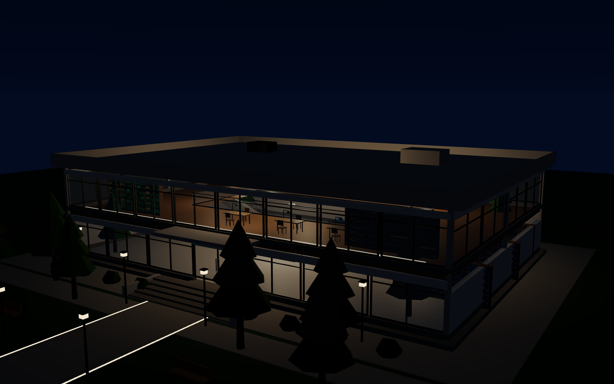
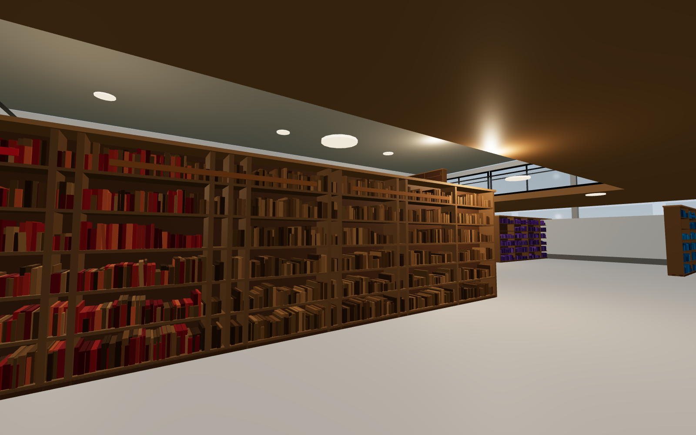
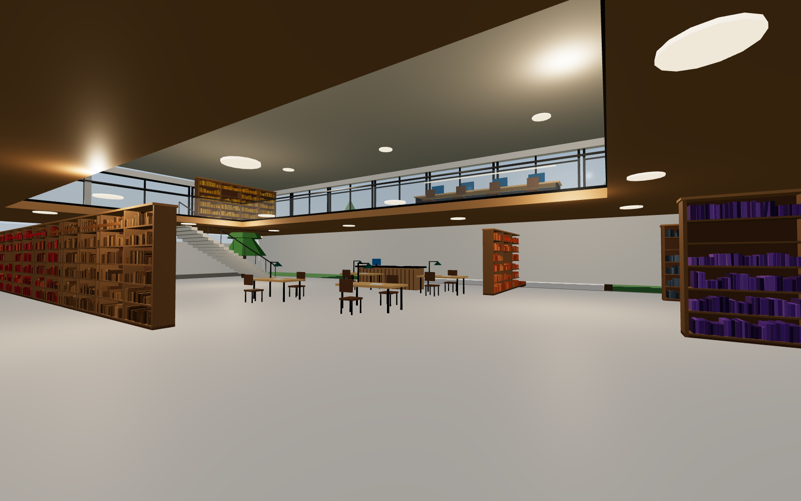

Ataşehir · İstanbul
Mahallenin
okuma salonu
İki katlı, cam cepheli bir halk kütüphanesi. On iki kitaplıkta sekiz binden fazla kitap, pencere boyunca uzanan okuma masaları ve gün ışığını içeri alan bir atrium.
- Kitaplık
- 12
- Kitap
- 8.573
- Okuma yeri
- 78
- Kat
- 2
Hakkımızda
Işığı içeri alan bir bina,
sessizliği koruyan bir salon
Kütüphane, 32 × 22 metrelik bir taban üzerine iki kat olarak kuruldu. Güney cephesi boydan boya cam: gün ışığı salonun ortasındaki atriyuma kadar giriyor, ikinci kat balkonu bu boşluğun etrafında dönüyor.
Zemin katta danışma bankosu, okuma masaları ve çocuk bölümü; üst katta bilgisayar istasyonları, etkinlik alanı ve sessiz çalışma köşesi var. Raflar Dewey düzenine göre ayrıldı, her kitaplığın sırtında kategori rengi taşıyan bir etiket bulunuyor.
Bu sayfa kütüphanenin dijital vitrinidir. Binayı 3D olarak gezebilir, rafların arasında dolaşabilir, bir kitaplığa tıklayıp hangi koleksiyona ait olduğunu okuyabilirsiniz.

Koleksiyonlar
On iki kitaplık,
on bir ayrı dünya
Her raf Dewey sınıflandırmasına göre düzenlendi. 3D gezintide bir kitaplığa tıkladığınızda kategoriyi, raf kodunu ve kitap sayısını görebilirsiniz.

Dijital vitrin
Binayı tarayıcıda gezin
Kurulum yok, eklenti yok. Kütüphane tarayıcınızda gerçek zamanlı olarak çiziliyor: dışarıdan 360° döndürün, içine girin, W ASD ile yürüyün.
- İki kat, iç merdiven — katlar arasında yürüyerek geçin
- Tıklanabilir kitaplıklar — kategori, Dewey aralığı, kitap sayısı
- Gün / gece — saati değiştirin, iç mekân aydınlatması uyum sağlar
- Çatıyı gizle — kuşbakışı yerleşimi inceleyin
Hizmetler
Salonda neler var
Ziyaret
Ne zaman gelebilirsiniz
| Pazartesi – Cuma | 09.00 – 21.00 |
|---|---|
| Cumartesi | 10.00 – 18.00 |
| Pazar | Kapalı |
Saatler ve adres bu tanıtım için temsilîdir. Güncel bilgi için kütüphanenin resmî kanallarını kontrol edin.
Adres
Ataşehir Merkez
Kütüphane Caddesi No: 1
34746 İstanbul
İletişim
0216 000 00 00
iletisim@atasehirkutuphanesi.example
Etkinlikler
- Yazar buluşması — her ayın 2. cumartesi, üst kat
- Çocuk okuma saati — her çarşamba 16.00
- Yazı atölyesi — iki haftada bir perşembe